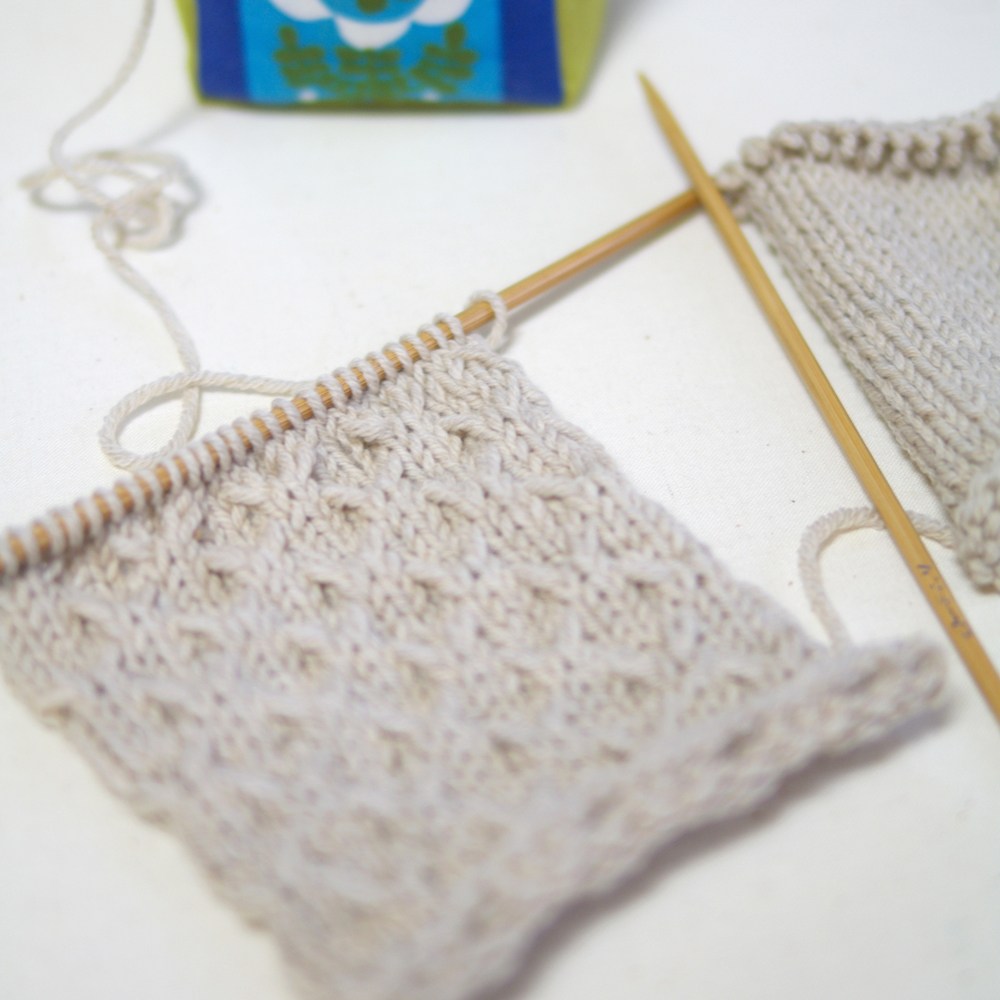
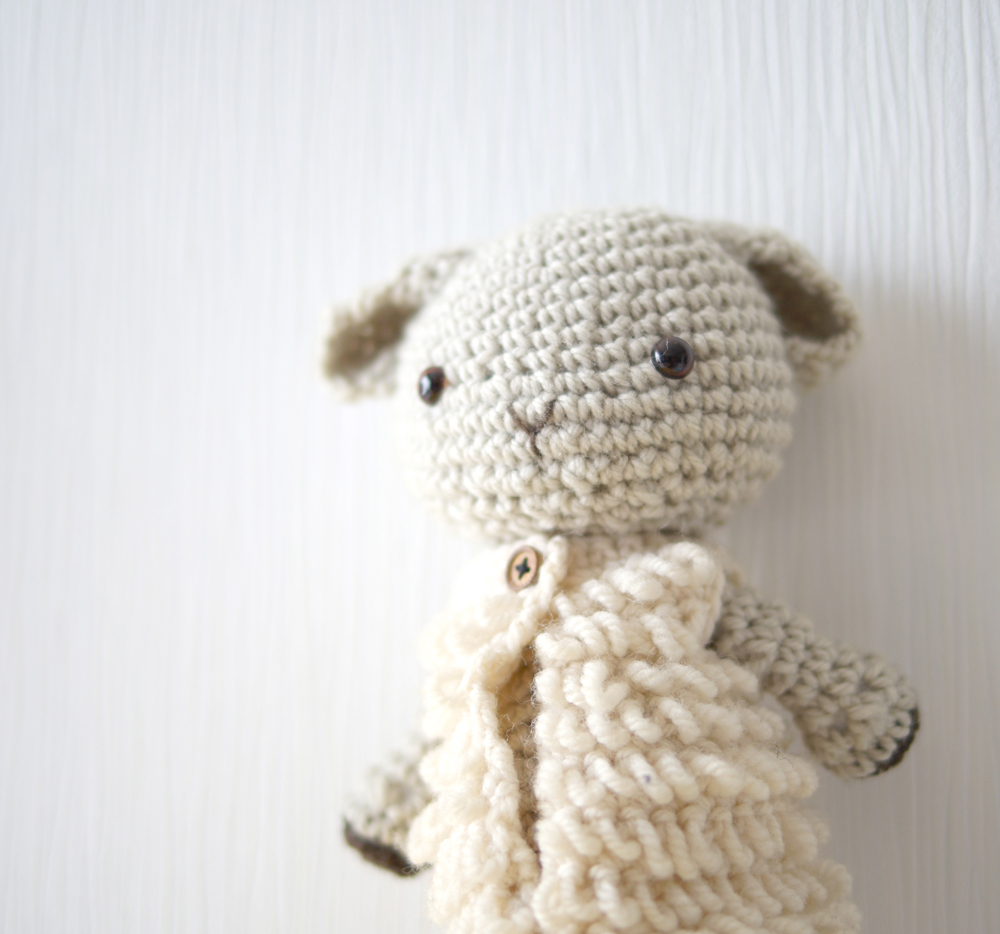

“あみもの”はじめてみませんか？
大好きなあの人に、
大切なその人に、
もうすぐ会えるこの子に、
それから、わたしに。
とっておきの「何か」を
作ってみませんか？
作りたい「何か」はありますか？
”あみもの”と言っても、じつはいろいろな種類があります。
ここでは代表的な”棒針編み”と”かぎ針編み”をご紹介します。
あなたが気になるのはどちら？

2本の棒状の針を使う方法です。
[横に進んで裏返し]繰り返すと、
V字のような”目”が並びます。
”表編み”と”裏編み”の２種類を覚えるだけで、
世界がぐっと広がります。
マフラーやセーターなど大きめのものが得意です。
先がかぎ（フック）になった1本の針を使う方法です。
針をくぐらせて、糸を引き抜く動作の繰り返し。
”くさり編み”と”コマ編み”“長編み”３つを覚えればOK
あみぐるみや小物が得意な編み目です。
もちろんセーターやベストも出来ますよ。
それでは、糸を選びましょう。
ポイントはやっぱり、自分が好きだなぁと思うものを選ぶこと。
だってあみものの糸は種類がたくさん！
ウールの糸は空気を含み、あったかふんわり。
あみやすい糸も多いです。
すべすべしたコットンや、ほわほわのモヘヤ、軽やかな麻やシルクetc..
アクリルの糸は「たわし」をあむのに最適だとか。
キラキラが入った楽しい糸。ループのついたモコモコの糸
途中で色が変わる段染めの糸。
Tシャツを裂いて生まれた極太の糸。
たくさんありすぎて、選びきれないかも？！
楽しくあみたい気持ちを叶えてくれる
見た目も可愛い道具が、あみものには多いのです！

棒針もかぎ針も、
糸の太さ合わせて、選びます。
棒針はバリエーション豊富。
スタンダードな玉付き針、両端が尖った4本針や5本針。
ケーブルのついた輪針など…用途によって使い分けます。
棒針もかぎ針も、
糸の太さ合わせて、選びます。
かぎ針の[かぎ]は[フック]のこと。
見た目やにぎりやすさで選んで◎

可愛くて便利、つい欲しくなる道具たち

amiema
あみものを愛する、ひつじ年おひつじ座うまれのあみヒツジ。
鋭意、あみもの修行中。
日本手芸普及協会 手編み指導員（準師範）
あみものレッスン随時受け付けます。
Puutalo
フィンランド語で「木の家」という意味のamiemaの住処。
セーターや小物たちを作っています。